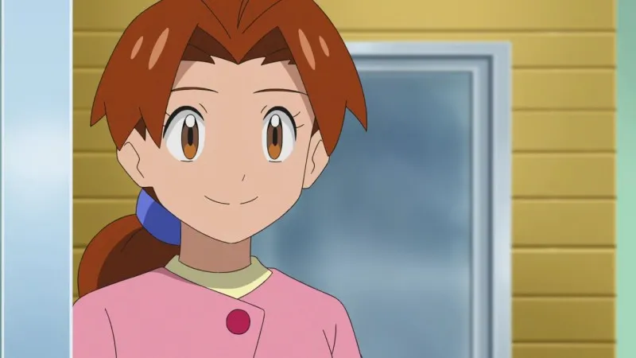

좆만한 용돈을 줄 테니 내 집에서 당장 꺼지려무나

좆만한 용돈을 줄 테니 내 집에서 당장 꺼지려무나
시작하고 pc 확인하면 상처약 하나 있음
지우라.....지우라고.... 그래 넌 지우....
지우엄마가 개꼴리긴해
저러고 지우엄마랑 오박사랑...(쑥덕쑥덕)
오박사님과 나의 교미하우스에서 이만 꺼지렴
무선 바이브 삽입한채로..
아니 근데 오박사는 드립인건 알고있는데 그런것 치곤 보일때마다 둘이 같이 붙어있음... 포켓몬 숨겨진 설정보면 딥한거 ㅈㄴ 많던데 이것도 은근히 지우엄마-오박사 관계 묘사한건가?? 생각이듬
스승과 제자라는데
지우아빠랑 지우엄마가 같이 오박사 제자인데 지우아빠는 본적이 없는거같음
오박사가 피카추를 대가없이 줬을까 하는 생각도 듬.
지우아빠 한카리아스설 모르심까
괜찮아요 엄마 남녀노소 다 배틀로 두들겨패서 송금까지 해드릴게요
그리고 너가 버는 용돈은 엄마가 대신 저축해줄게
어머 너가 모아둔 돈으로 쇼핑을 했단다